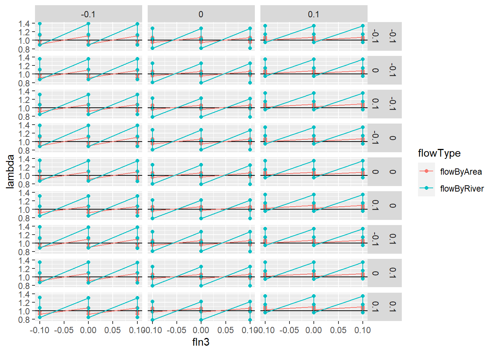
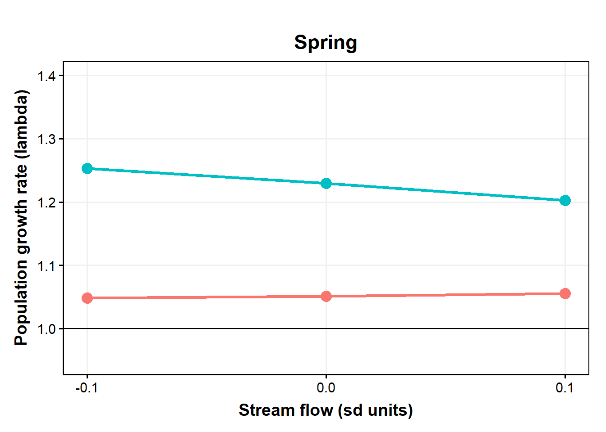
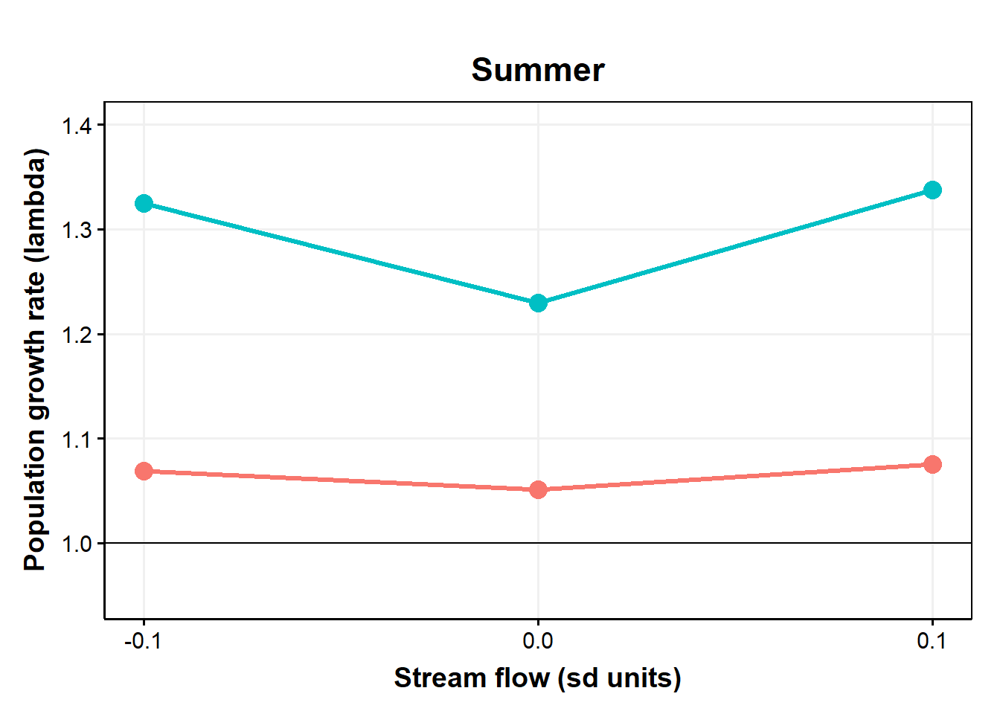
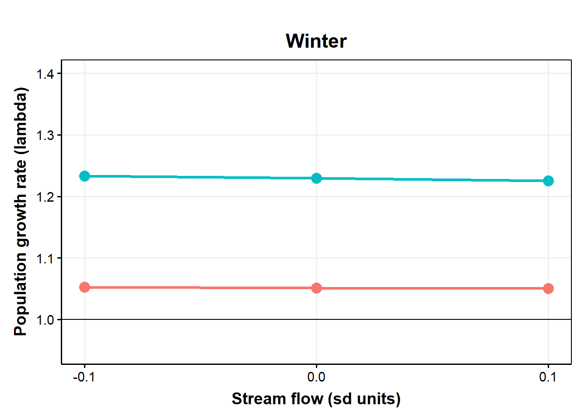

11 Survival by river/area
This is a ‘fork’ of modelsCMR_ft_cohort_Flow_OB.qmd where the models were originally worked out. following Daniel’s march 2023 changes, Ben adapted the …_OB file to this …_WB file.
As of 3/13/23 - Following trouble getting the models to run on workbench (runs timed out) and on a laptop with targets (broken into targets ./R/hold/modelCMR_ttt_ft_cohort_WB.R - get error following Rmodel step, run with a function ./R/hold/modelCMR_ttt_ft_cohort_WB_usingFunction.R - did not finish [seems like targets is interrupting fitting somehow…]), now models are run using a function (run_ttt_model() in ./models/cmrFlowWB/modelCMR_ttt_ft_cohort_WB_functionsToSource.R) and saved to a file in ./models/cmrFlowWB/runsOut/modx/. Targets will read in the files for analysis using modelCMR_ttt_WB.R.
File names are ttt_WB_mcmc_modx.csv and the targets are mcmcOutModx.
Summary
File to run models: wbBook_quarto_targets/models/cmrFlowWB/modelCMR_ttt_ft_cohort_WB_makeFile.R ->
Model running functions:
wbBook_quarto_targets/models/cmrFlowWB/modelCMR_ttt_ft_cohort_WB_functionsToSource.R ->
File to add model output to target:
wbBook_quarto_targets/R/modelCMR_ttt_WB.R
will need to update this section of text Probability of survival (phi) model structure:
logit(phi[t,i]) <-
betaInt[ isYOY[i,t],season[t],cohort[i]] +
betaFlow[1,isYOY[i,t],season[t]] * flow[i,t] +
betaFlow[2,isYOY[i,t],season[t]] * temp[i,t] +
betaFlow[3,isYOY[i,t],season[t]] * temp[i,t] * flow[i,t]
Probability of capture (p) model structure:
logit(p[t,i]) <- betaP[isYOY[i,t],season[t-1],cohort[i]]
The goal of this modelling exercise is to evaluate the effect of new tributary-specific stream flow estimates on survival of brook trout. Here, we compare survival within one tributary (O’Bear Brook) with flow input data as 1) single flow estimate for all locations (historical approach) and 2) hindcasted flows for each tributary based on new tributary-specific flows which are available since 2000.
The goal is to compare survival estimates with tributary-specific flow to estimates with common flow across locations.
Note: a model without cohort structure is here modelsCMR_ft_Flow_OB.qmd but is not included because results are similar but without the cohort estimates.
Structure options include [species, cohort, season, isYOY, flow, flow^2]
Model naming mod1 = ttt_fByAreaT_cohort_WB mod2 = ttt_fByRiverT_cohort_WB
11.1 Load data
Code
# byArea
load(paste0('./models/cmrFlowWB/runsOut/mod', 1, '/ttt_WB_mod', 1, '_mostRecent.RData'))
out_flowByArea <- d
# move to targets
summary_flowByArea <- MCMCsummary(object = out_flowByArea$mcmc, round = 3) %>%
mutate(flowData = "flowByArea") %>%
rownames_to_column(var = "var")
# byRiver
load(paste0('./models/cmrFlowWB/runsOut/mod', 2, '/ttt_WB_mod', 2, '_mostRecent.RData'))
out_flowByRiver <- d
summary_flowByRiver <- MCMCsummary(object = out_flowByRiver$mcmc, round = 3) %>%
mutate(flowData = "flowByRiver") %>%
rownames_to_column(var = "var")
# combined
both <- bind_rows(summary_flowByArea, summary_flowByRiver) %>%
rename(lo = '2.5%', hi = '97.5%', median = '50%') 11.2 Nimble models
11.2.1 Model with original flow data
Cohort-dependent estimates of phi and p with flow and temperature hierarchical effects
11.2.1.1 Retrieve model results
Model is run using this file wbBook_quarto_targets/models/cmrFlowWB/modelCMR_ttt_ft_cohort_WB_makeFile.R
Code
# Following https://oliviergimenez.github.io/bayesian-cr-workshop/worksheets/4_demo.html
#
#out_flow <- tar_read(toSave_ttt_WB_target)
# out_flow_target <- tar_read(toSave_ttt_WB_target)
# load(paste0('./models/cmrFlowWB/runsOut/mod', 1, '/ttt_WB_mod', 1, '_mostRecent.RData'))
# out_flowByArea <- d
#out_flow <- read.csv( paste0('./models/cmrFlowWB/runsOut/mod', modelNum, '/ttt_WB_mcmc_mod', modelNum,'_chains12.csv'))
MCMCplot(object = out_flowByArea$mcmc)
Code
# summary_flowByArea <- MCMCsummary(object = out_flowByArea$mcmc, round = 3) %>%
# mutate(flowData = "flowByArea") %>%
# rownames_to_column(var = "var")
#summary_flowByArea %>% filter(grepl("phi", var))
#summary_flowByArea %>% filter(grepl("betaPhiYOYSeason", var))
#summary_flowByArea %>% filter(grepl("betaFlow", var))
#summary_flowByArea %>% filter(grepl("betaInt", var))
# parametersToSave <- c( "betaIntOut", "betaIntRiverYOYSeasonOut", "betaIntRiverSeasonOut", "betaIntRiverOut", "betaIntTopOut",
# "betaFlowOut", "betaFlowRiverOut", "betaFlowTopOut",
# "betaInt", "betaFlow",
# "betaPOut",
# "psi"
# )
priors <- runif(out_flowByArea$nIter * out_flowByArea$nChains, 0, 1)
MCMCtrace(object = out_flowByArea$mcmc,
#ISB = FALSE,
#exact = TRUE,
params = c(
"betaIntRiverSeasonOut"#, "betaPhiYOYSeason","betaPYOYSeason"
# "betaIntTop", "betaPhiTop","betaFlowTop","betaPTop"
# "betaInt", "betaPhi","betaFlow","betaP",
# "betaIntOut", "betaPhiOut","betaFlowOut","betaPOut"
),
pdf = FALSE,
priors = priors)


Code
MCMCtrace(object = out_flowByArea$mcmc,
#ISB = FALSE,
#exact = TRUE,
params = c(
"betaFlowRiverOut"
# "betaIntYOY", "betaPhiYOY","betaFlowYOY","betaPYOY"
# "betaInt", "betaPhi","betaFlow","betaP",
# "betaIntOut", "betaPhiOut","betaFlowOut","betaPOut"
),
pdf = FALSE,
priors = priors)


11.2.2 Model with flow data hindcast for each river
Cohort-dependent estimates of phi and p with flowByRiver hierarchical effects
11.2.2.1 Retrieve model results
Model is run using this file wbBook_quarto_targets/models/cmrFlowWB/modelCMR_ttt_ft_cohort_WB_makeFile.R
Code
# Following https://oliviergimenez.github.io/bayesian-cr-workshop/worksheets/4_demo.html
#
#out_flowByRiver <- tar_read(mcmcOutMod2)
# load(paste0('./models/cmrFlowWB/runsOut/mod', 2, '/ttt_WB_mod', 2, '_mostRecent.RData'))
# out_flowByRiver <- d
#
MCMCplot(object = out_flowByRiver$mcmc)
Code
# summary_flowByRiver <- MCMCsummary(object = out_flowByRiver$mcmc, round = 3) %>%
# mutate(flowData = "flowByRiver") %>%
# rownames_to_column(var = "var")
#summary_flowByRiver %>% filter(grepl("betaIntYOYSeason", var))
#summary_flowByRiver %>% filter(grepl("betaPhiYOYSeason", var))
#summary_flowByRiver %>% filter(grepl("betaFlow", var))
priors <- runif(out_flowByRiver$nIter * out_flowByRiver$nChains, 0, 1)
MCMCtrace(object = out_flowByRiver$mcmc,
#ISB = FALSE,
#exact = TRUE,
params = c(
"betaIntRiverSeasonOut"#, "betaPhiYOY","betaFlowYOY","betaPYOY"
),
pdf = FALSE,
priors = priors)


Code
# MCMCtrace(object = out_flowByRiver$mcmc,
# #ISB = FALSE,
# #exact = TRUE,
# params = c("betaInt"),
# pdf = FALSE,
# priors = priors)11.2.3 Compare parameter estimates of models with flowByArea and flowByRiver
Code
# both <- bind_rows(summary_flowByArea, summary_flowByRiver) %>%
# rename(lo = '2.5%', hi = '97.5%', median = '50%')
# mutate(medianIlogit = ilogit(median),
# loIlogit = ilogit(lo),
# hiIlogit = ilogit(hi))
ggplot(both %>% filter(grepl("betaIntTop", var)), aes(color = flowData)) +
geom_point(aes(var, median), size = 2, position = position_dodge(width = 0.5)) +
geom_errorbar( aes(var, ymin = lo, ymax = hi), width = 0.4, position = position_dodge(width = 0.5)) +
theme(axis.text.x = element_text(angle = 90, vjust = 1, hjust=1)) +
#labs(x = "Variable", y = "Survival") +
guides(color = guide_legend(
title = "Data source"
))
Code
ggplot(both %>% filter(grepl("betaFlowTop", var)), aes(color = flowData)) +
geom_point(aes(var, median), size = 2, position = position_dodge(width = 0.5)) +
geom_errorbar( aes(var, ymin = lo, ymax = hi), width = 0.4, position = position_dodge(width = 0.5)) +
#labs(x = "Variable", y = "Survival") +
guides(color = guide_legend(
title = "Data source"
)) 
Code
ggplot(both %>% filter(grepl("betaFlowRiver", var)), aes(color = flowData)) +
geom_point(aes(var, median), size = 2, position = position_dodge(width = 0.5)) +
geom_errorbar( aes(var, ymin = lo, ymax = hi), width = 0.4, position = position_dodge(width = 0.5)) +
theme(axis.text.x = element_text(angle = 90, vjust = 1, hjust=1)) +
#labs(x = "Variable", y = "Survival") +
guides(color = guide_legend(
title = "Data source"
))
Code
ggplot(both %>% filter(grepl("betaFlowRiverOut", var)), aes(color = flowData)) +
geom_point(aes(var, qlogis(median)), size = 2, position = position_dodge(width = 0.5)) +
geom_errorbar( aes(var, ymin = qlogis(lo), ymax = qlogis(hi)), width = 0.4, position = position_dodge(width = 0.5)) +
theme(axis.text.x = element_text(angle = 90, vjust = 1, hjust=1)) +
#labs(x = "Variable", y = "Survival") +
guides(color = guide_legend(
title = "Data source"
))
Code
ggplot(both %>% filter(grepl("betaFlow\\[", var)), aes(color = flowData)) +
geom_point(aes(var, median), size = 2, position = position_dodge(width = 0.5)) +
geom_errorbar( aes(var, ymin = lo, ymax = hi), width = 0.4, position = position_dodge(width = 0.5)) +
theme(axis.text.x = element_text(angle = 90, vjust = 1, hjust=1)) +
#labs(x = "Variable", y = "Survival") +
guides(color = guide_legend(
title = "Data source"
))
Code
ggplot(both %>% filter(grepl("betaIntRiverOut\\[", var)), aes(color = flowData)) +
geom_point(aes(var, median), size = 2, position = position_dodge(width = 0.5)) +
geom_errorbar( aes(var, ymin = lo, ymax = hi), width = 0.4, position = position_dodge(width = 0.5)) +
theme(axis.text.x = element_text(angle = 90, vjust = 1, hjust=1)) +
labs(x = "Variable", y = "Survival") +
guides(color = guide_legend(
title = "Data source"
))
Code
ggplot(both %>% filter(grepl("betaIntRiverSeason", var)), aes(color = flowData)) +
geom_point(aes(var, median), size = 2, position = position_dodge(width = 0.5)) +
geom_errorbar( aes(var, ymin = lo, ymax = hi), width = 0.4, position = position_dodge(width = 0.5)) +
theme(axis.text.x = element_text(angle = 90, vjust = 1, hjust=1)) +
#labs(x = "Variable", y = "Survival") +
guides(color = guide_legend(
title = "Data source"
))
Code
ggplot(both %>% filter(grepl("betaIntRiverYOYSeason", var)), aes(color = flowData)) +
geom_point(aes(var, median), size = 2, position = position_dodge(width = 0.5)) +
geom_errorbar( aes(var, ymin = lo, ymax = hi), width = 0.4, position = position_dodge(width = 0.5)) +
theme(axis.text.x = element_text(angle = 90, vjust = 1, hjust=1)) +
#labs(x = "Variable", y = "Survival") +
guides(color = guide_legend(
title = "Data source"
))
Code
# Uncomment and run to save file for observable
# write.csv(
# both %>% filter(grepl("betaIntRiverYOYSeason", var)),
# file = './data/outForObservable/betaIntRiverYOYSeason.csv'
# )
# ggplot(both %>% filter(grepl("betaInt\\[", var)), aes(color = flowData)) +
# geom_point(aes(var, median), size = 2, position = position_dodge(width = 0.5)) +
# geom_errorbar( aes(var, ymin = lo, ymax = hi), width = 0.4, position = position_dodge(width = 0.5)) +
# theme(axis.text.x = element_text(angle = 90, vjust = 1, hjust=1))
# ggplot(both %>% filter(grepl("betaP", var)), aes(color = flowData)) +
# geom_point(aes(var, mean), size = 2, position = position_dodge(width = 0.5)) +
# geom_errorbar( aes(var, ymin = lo, ymax = hi), width = 0.4, position = position_dodge(width = 0.5)) +
# theme(axis.text.x = element_text(angle = 90, vjust = 1, hjust=1))
# ggplot(both %>% filter(grepl("betaPOut", var)), aes(color = flowData)) +
# geom_point(aes(var, mean), size = 2, position = position_dodge(width = 0.5)) +
# geom_errorbar( aes(var, ymin = lo, ymax = hi), width = 0.4, position = position_dodge(width = 0.5)) +
# theme(axis.text.x = element_text(angle = 90, vjust = 1, hjust=1))Code
# out_flow$mcmc$chain1 %>%
# filter(grepl("phi\\[", var)) %>%
# mutate(
# flowData = "flow",
# tmp = str_match(var, "\\[([0-9]+), ([0-9]+), ([0-9]+)\\]")[, 2:4] %>% as.data.frame(),
# param = tmp$V1,
# isYOY = tmp$V2,
# season = tmp$V3
# ) %>%
# dplyr::select(-tmp)11.2.4 Survival comparisons
Code
getBetas <- function(d) {
#betaFlow
betaFlow <- d %>%
filter(grepl("betaInt\\[", var)) %>%
mutate(
flowData = "flow",
tmp = str_match(var, "\\[([0-9]+), ([0-9]+), ([0-9]+)\\]")[, 2:4] %>% as.data.frame(),
param = tmp$V1,
isYOY = tmp$V2,
season = tmp$V3
) %>%
dplyr::select(-tmp)
betaFlowYOY <- d %>%
filter(grepl("betaFlowYOY", var)) %>%
mutate(
flowData = "flow",
tmp = str_match(var, "\\[([0-9]+), ([0-9]+)\\]")[, 2:3] %>% as.data.frame(),
param = tmp$V1,
isYOY = tmp$V2,
) %>%
dplyr::select(-tmp)
betaFlowTop <- d %>%
filter(grepl("betaFlowTop", var)) %>%
mutate(
flowData = "flow",
tmp = str_match(var, "\\[([0-9]+)\\]") %>% as.data.frame(),
param = tmp$V2
) %>%
dplyr::select(-tmp)
}
getBetaIntOuts <- function(d, dataType = "flow") {
#betaFlow
betaInt <- d %>%
filter(grepl("betaIntOut\\[", var)) %>%
mutate(
flowData = dataType,
tmp = str_match(var, "\\[([0-9]+), ([0-9]+), ([0-9]+), ([0-9]+)\\]")[, 2:5] %>% as.data.frame(),
river = tmp$V1,
isYOY = tmp$V2,
season = tmp$V3,
cohort = tmp$V4,
varName = "betaIntOut"
) %>%
dplyr::select(-tmp) %>%
filter(!(season == 2 & isYOY == 1))
betaIntRiver <- d %>%
filter(grepl("betaIntRiverOut\\[", var)) %>%
mutate(
flowData = dataType,
tmp = str_match(var, "\\[([0-9]+)\\]") %>% as.data.frame(),
river = tmp$V2,
varName = "betaIntRiverOut"
) %>%
dplyr::select(-tmp)
betaIntRiverSeason <- d %>%
filter(grepl("betaIntRiverSeasonOut\\[", var)) %>%
mutate(
flowData = dataType,
tmp = str_match(var, "\\[([0-9]+), ([0-9]+)\\]")[, 2:3] %>% as.data.frame(),
river = tmp$V1,
season = tmp$V2,
varName = "betaIntRiverSeasonOut"
) %>%
dplyr::select(-tmp) #%>%
#filter(!(season == 2 & isYOY == 1))
betaIntRiverYOYSeason <- d %>%
filter(grepl("betaIntRiverYOYSeasonOut\\[", var)) %>%
mutate(
flowData = dataType,
tmp = str_match(var, "\\[([0-9]+), ([0-9]+), ([0-9]+)\\]")[, 2:4] %>% as.data.frame(),
river = tmp$V1,
isYOY = tmp$V2,
season = tmp$V3,
varName = "betaIntRiverYOYSeasonOut"
) %>%
dplyr::select(-tmp) %>%
filter(!(season == 2 & isYOY == 1))
return(
bind_rows(betaInt, betaIntRiver, betaIntRiverSeason, betaIntRiverYOYSeason) %>%
mutate(
cohort = as.numeric(cohort) + 2002 - 1)
)
}11.2.4.1 Get betaIntOut estimates
Code
betaIntFlowByArea <- getBetaIntOuts(summary_flowByArea, "flowByArea")
betaIntFlowByRiver <- getBetaIntOuts(summary_flowByRiver, "flowByRiver")
betaInts <- bind_rows(betaIntFlowByArea, betaIntFlowByRiver) %>%
rename(lo = '2.5%', hi = '97.5%', median = '50%')Code
ggplot(betaInts %>% filter(varName == "betaIntOut"), aes(cohort, mean, color = flowData)) +
geom_point(size = 2, position = position_dodge(width = 0.5)) +
geom_errorbar(aes(cohort, ymin = lo, ymax = hi), width = 0.4, position = position_dodge(width = 0.5)) +
scale_x_continuous("Cohort") +
scale_y_continuous("Suvrival") +
facet_grid(season~isYOY+river, labeller = global_labellerInt_WB) +
guides(color = guide_legend(
title = "Data source"
))
Code
ggplot(betaInts %>% filter(varName == "betaIntRiverSeasonOut"), aes(season, mean, color = flowData)) +
geom_point(size = 2, position = position_dodge(width = 0.5)) +
geom_errorbar(aes(season, ymin = lo, ymax = hi), width = 0.4, position = position_dodge(width = 0.5)) +
scale_x_discrete("Season") +
scale_y_continuous("Suvrival") +
facet_wrap(~river, labeller = global_labellerInt_WB) +
guides(color = guide_legend(
title = "Data source"
))
Code
ggplot(betaInts %>% filter(varName == "betaIntRiverYOYSeasonOut"), aes(isYOY, mean, color = flowData)) +
geom_point(size = 2, position = position_dodge(width = 0.5)) +
geom_errorbar(aes(isYOY, ymin = lo, ymax = hi), width = 0.4, position = position_dodge(width = 0.5)) +
facet_grid(season~river, labeller = global_labellerInt_WB) +
guides(color = guide_legend(
title = "Data source"
))
11.2.5 Flow effect predictions
Code
#Has not been updated to new mcmc model
getPredictions_FlowYOYSeasonCohort <- function(toSave, everyNIters = 10, flowStep = 0.5){
mcmc <- toSave$mcmc
## betaInt
predictorsBetaInt <- expand.grid(
iter = seq(1, dim(mcmc$chain1)[1], everyNIters),
isYOY = 1:2,
season = 1:toSave$myConstants$nSeasons,
cohort = 1:toSave$myConstants$nCohorts
)
for(i in 1:nrow(predictorsBetaInt)){
predictorsBetaInt$betaInt[i] <- mcmc$chain1[[predictorsBetaInt[i, "iter"],
paste0("betaInt[", predictorsBetaInt[i, "isYOY"],
", ", predictorsBetaInt[i, "season"],
", ", predictorsBetaInt[i, "cohort"],
"]")
]]
}
# ## betaPhi
# predictorsBetaPhi <- expand.grid(
# iter = seq(1, dim(mcmc$chain1)[1], everyNIters),
# isYOY = 1:2,
# season = 1:toSave$myConstants$nSeasons,
# cohort = 1:toSave$myConstants$nCohorts
# )
#
# for(i in 1:nrow(predictorsBetaPhi)){
# predictorsBetaPhi$betaPhi[i] <- mcmc$chain1[[predictorsBetaPhi[i, "iter"],
# paste0("betaPhi[", predictorsBetaPhi[i, "isYOY"],
# ", ", predictorsBetaPhi[i, "season"],
# ", ", predictorsBetaPhi[i, "cohort"],
# "]")
# ]]
# }
## betaFlow
predictorsBetaFlow <- expand.grid(
iter = seq(1, dim(mcmc$chain1)[1], everyNIters),
isYOY = 1:2,
season = 1:toSave$myConstants$nSeasons
# cohort = 1:toSave$myConstants$nCohorts
)
for(i in 1:nrow(predictorsBetaFlow)){
predictorsBetaFlow$betaFlow1[i] <- mcmc$chain1[[predictorsBetaFlow[i, "iter"],
paste0("betaFlow[1, ", predictorsBetaFlow[i, "isYOY"],
", ", predictorsBetaFlow[i, "season"],
# ", ", predictorsBetaFlow[i, "cohort"],
"]")
]]
predictorsBetaFlow$betaFlow2[i] <- mcmc$chain1[[predictorsBetaFlow[i, "iter"],
paste0("betaFlow[2, ", predictorsBetaFlow[i, "isYOY"],
", ", predictorsBetaFlow[i, "season"],
# ", ", predictorsBetaFlow[i, "cohort"],
"]")
]]
predictorsBetaFlow$betaFlow3[i] <- mcmc$chain1[[predictorsBetaFlow[i, "iter"],
paste0("betaFlow[3, ", predictorsBetaFlow[i, "isYOY"],
", ", predictorsBetaFlow[i, "season"],
# ", ", predictorsBetaFlow[i, "cohort"],
"]")
]]
}
predictorsAll <- expand.grid(
iter = seq(1, dim(mcmc$chain1)[1], everyNIters),
isYOY = 1:2,
cohort = 1:toSave$myConstants$nCohorts,
season = 1:toSave$myConstants$nSeasons,
flow = seq(-1.5, 1.5, flowStep),
temp = seq(-1.5, 1.5, flowStep)
)
preds <- predictorsAll %>%
left_join(predictorsBetaInt) %>%
left_join(predictorsBetaFlow) %>%
# left_join(predictorsBetaPhi) %>%
mutate(predPhi = plogis(betaInt + betaFlow1 * flow + betaFlow2 * temp + betaFlow3 * flow * temp))
return(preds)
}Code
getPredictions_FlowRiverYOYSeason <- function(toSave, everyNIters = 10, flowStep = 0.5){
mcmc <- toSave$mcmc
## betaInt
predictorsBetaInt <- expand.grid(
iter = seq(1, dim(mcmc$chain1)[1], everyNIters),
river = 1:toSave$myConstants$nRivers,
isYOY = 1:2,
season = 1:toSave$myConstants$nSeasons
)
for(i in 1:nrow(predictorsBetaInt)){
predictorsBetaInt$betaInt[i] <-
qlogis( #because don't have var w/o Out as of 4/24/23
mcmc$chain1[[
predictorsBetaInt[i, "iter"],
paste0("betaIntRiverYOYSeasonOut[",
predictorsBetaInt[i, "river"],
", ",
predictorsBetaInt[i, "isYOY"],
", ",
predictorsBetaInt[i, "season"],
"]")
]]
)
}
# parametersToSave <- c( "betaIntOut", "betaIntRiverYOYSeasonOut", "betaIntRiverSeasonOut", "betaIntRiverOut", "betaIntTopOut",
# "betaFlowOut", "betaFlowRiverOut", "betaFlowTopOut",
# "betaInt", "betaFlow",
# "betaPOut",
# "psi"
# )
# ## betaPhi
# predictorsBetaPhi <- expand.grid(
# iter = seq(1, dim(mcmc$chain1)[1], everyNIters),
# isYOY = 1:2,
# season = 1:toSave$myConstants$nSeasons
# # cohort = 1:toSave$myConstants$nCohorts
# )
#
# for(i in 1:nrow(predictorsBetaPhi)){
# predictorsBetaPhi$betaPhi[i] <- mcmc$chain1[[predictorsBetaPhi[i, "iter"],
# paste0("betaPhiYOYSeason[", predictorsBetaPhi[i, "isYOY"],
# ", ", predictorsBetaPhi[i, "season"],
# # ", ", predictorsBetaPhi[i, "cohort"],
# "]")
# ]]
# }
## betaFlow
predictorsBetaFlow <- expand.grid(
iter = seq(1, dim(mcmc$chain1)[1], everyNIters),
river = 1:toSave$myConstants$nRivers,
isYOY = 1:2,
season = 1:toSave$myConstants$nSeasons
)
for(i in 1:nrow(predictorsBetaFlow)){
predictorsBetaFlow$betaFlow1[i] <-
mcmc$chain1[[
predictorsBetaFlow[i, "iter"],
paste0("betaFlowOut[1, ",
predictorsBetaFlow[i, "river"],
", ",
predictorsBetaFlow[i, "isYOY"],
", ",
predictorsBetaFlow[i, "season"],
"]")
]]
predictorsBetaFlow$betaFlow2[i] <-
mcmc$chain1[[
predictorsBetaFlow[i, "iter"],
paste0("betaFlow[2, ",
predictorsBetaFlow[i, "river"],
", ",
predictorsBetaFlow[i, "isYOY"],
", ",
predictorsBetaFlow[i, "season"],
"]")
]]
predictorsBetaFlow$betaFlow3[i] <-
mcmc$chain1[[
predictorsBetaFlow[i, "iter"],
paste0("betaFlow[3, ",
predictorsBetaFlow[i, "river"],
", ",
predictorsBetaFlow[i, "isYOY"],
", ",
predictorsBetaFlow[i, "season"],
"]")
]]
}
predictorsAll <- expand.grid(
iter = seq(1, dim(mcmc$chain1)[1], everyNIters),
river = 1:toSave$myConstants$nRivers,
isYOY = 1:2,
season = 1:toSave$myConstants$nSeasons,
flow = seq(-1.5, 1.5, flowStep),
temp = seq(-1.5, 1.5, flowStep)
)
preds <- predictorsAll %>%
left_join(predictorsBetaInt) %>%
left_join(predictorsBetaFlow) %>%
# left_join(predictorsBetaPhi) %>%
mutate(predPhi = plogis(betaInt + betaFlow1 * flow + betaFlow2 * temp + betaFlow3 * flow * temp))
return(preds)
}Code
predFlowByAreaRiverYOYSeason <- getPredictions_FlowRiverYOYSeason(out_flowByArea, everyNIters = 2) %>%
mutate(flowData = "flow")
predFlowByRiverRiverYOYSeason <- getPredictions_FlowRiverYOYSeason(out_flowByRiver, everyNIters = 2) %>%
mutate(flowData = "flowByRiver")
predBoth <- bind_rows(predFlowByAreaRiverYOYSeason, predFlowByRiverRiverYOYSeason)11.2.5.1 Graph flow predictions
Predictions based on flow from the flow extension curve (flowByArea) - original approach
Code
colors <- c("blue", "green", "red")
ggplot(predFlowByAreaRiverYOYSeason %>% filter(temp %in% c(-1,0,1)), aes(flow, predPhi, group = ((paste0(iter,temp, sep = "_"))))) +
geom_line(aes(color = factor(temp)), alpha = 0.05) +
scale_color_manual(values = colors) +
guides(colour = guide_legend(override.aes = list(alpha = 1))) +
facet_grid(season ~ river+isYOY, labeller = global_labellerInt_WB)
Predictions based on flow from flowByRiver
Code
ggplot(predFlowByRiverRiverYOYSeason %>% filter(temp %in% c(-1,0,1)), aes(flow, predPhi, group = ((paste0(iter,temp, sep = "_"))))) +
geom_line(aes(color = factor(temp)), alpha = 0.05) +
scale_color_manual(values = colors) +
guides(colour = guide_legend(override.aes = list(alpha = 1))) +
facet_grid(season ~ river+isYOY, labeller = global_labellerInt_WB)
11.2.5.2 Figures for talk
byArea
Code
ggplot(predFlowByAreaRiverYOYSeason %>% filter(temp %in% c(-1,0,1), isYOY == 1), aes(flow, predPhi, group = ((paste0(iter,temp, sep = "_"))))) +
geom_line(aes(color = factor(temp)), alpha = 0.05) +
scale_color_manual(values = colors) +
ggtitle("Younger fish, by Area") +
labs(x = "Scaled stream flow", y = "Survival") +
guides(colour = guide_legend(override.aes = list(alpha = 1), title = "Scaled\n Temp")) +
facet_grid(season ~ river, labeller = global_labellerInt_WB)
Code
ggplot(predFlowByAreaRiverYOYSeason %>% filter(temp %in% c(-1,0,1), isYOY == 2), aes(flow, predPhi, group = ((paste0(iter,temp, sep = "_"))))) +
geom_line(aes(color = factor(temp)), alpha = 0.05) +
scale_color_manual(values = colors) +
ggtitle("Older fish, by Area") +
labs(x = "Scaled stream flow", y = "Survival") +
guides(colour = guide_legend(override.aes = list(alpha = 1), title = "Scaled\n Temp")) +
facet_grid(season ~ river, labeller = global_labellerInt_WB)
Code
ggplot(predFlowByRiverRiverYOYSeason %>% filter(temp %in% c(-1,0,1), isYOY == 1), aes(flow, predPhi, group = ((paste0(iter,temp, sep = "_"))))) +
geom_line(aes(color = factor(temp)), alpha = 0.05) +
scale_color_manual(values = colors) +
labs(x = "Scaled stream flow", y = "Survival") +
ggtitle("Younger fish, by River") +
guides(colour = guide_legend(override.aes = list(alpha = 1), title = "Scaled\n Temp")) +
facet_grid(season ~ river, labeller = global_labellerInt_WB)
Code
ggplot(predFlowByRiverRiverYOYSeason %>% filter(temp %in% c(-1,0,1), isYOY == 2), aes(flow, predPhi, group = ((paste0(iter,temp, sep = "_"))))) +
geom_line(aes(color = factor(temp)), alpha = 0.05) +
scale_color_manual(values = colors) +
labs(x = "Scaled stream flow", y = "Survival") +
ggtitle("Older fish, by River") +
guides(colour = guide_legend(override.aes = list(alpha = 1), title = "Scaled\n Temp")) +
facet_grid(season ~ river, labeller = global_labellerInt_WB)
Similar format to to the 2015 paper
flowByArea
Code
colors2 <- c("red", "green", "blue")
ggplot(predFlowByAreaRiverYOYSeason %>% filter(flow %in% c(-1,0,1)), aes(temp, predPhi, group = ((paste0(iter,flow, sep = "_"))))) +
geom_line(aes(color = factor(flow)), alpha = 0.05) +
scale_color_manual(values = colors2) +
guides(colour = guide_legend(override.aes = list(alpha = 1))) +
facet_grid(season ~ river+isYOY, labeller = global_labellerInt_WB)
flowByRiver
Code
ggplot(predFlowByRiverRiverYOYSeason %>% filter(flow %in% c(-1,0,1)), aes(temp, predPhi, group = ((paste0(iter,flow, sep = "_"))))) +
geom_line(aes(color = factor(flow)), alpha = 0.05) +
scale_color_manual(values = colors2) +
guides(colour = guide_legend(override.aes = list(alpha = 1))) +
facet_grid(season ~ river+isYOY, labeller = global_labellerInt_WB)
11.2.6 Relate flow/temp to survival
Get flow average flow and temp data for each occasion (cohort/season)
Flow data pathway -
| Raw data in envDataWB_target from getDataEnv_targets.R
| Data added to cdWB_CMR0_target using addEnvironmental3() in getDataCMR_targets.R (now in generalFunctions.R)
| Data scaled using scaleEnvData() in getDataCMR_targets.R
| meanFlowScaled
| meanFlowByRiverScaled
| meanTemperatureScaled
| cdWB_CMR0_target feeds into getEH_AIS() to create eh_WB_2002_2014_target
| eh_WB_2002_2014_target$data contains filtered data that created the components of eh_WB_2002_2014_target that are used for CMR analysis.
We can use eh_WB_2002_2014_target$data to get summary flow and temp data
Code
eh_WB_2002_2014_target = tar_read(eh_WB_2002_2014_target)
mFlowTemp <- eh_WB_2002_2014_target$data %>%
group_by(riverN, cohort, season) %>%
summarize(mFlowByArea = mean(meanFlowByArea_flowExtScaled, na.rm = TRUE),
mFlowByRiver = mean(meanFlowByRiverScaled, na.rm = TRUE),
mTemp = mean(meanTemperatureScaled, na.rm = TRUE),
n = n()) %>%
rename(river = riverN) |>
mutate(season = as.character(season),
river = as.character(river))
betaIntsFT <- betaInts %>%
left_join(mFlowTemp)11.2.6.1 Environmental variables
How do the flow metrics (byArea, byRiver) compare to each other?
These are based on the individual fish flow metrics
Code
ggplot(betaIntsFT %>% filter(varName == "betaIntOut"), aes(mFlowByArea, mFlowByRiver, color = season)) +
geom_point() +
geom_abline(intercept = 0, slope = 1) +
labs(x = "Standardized stream flow by area", y = "Standardized stream flow by river") +
guides(color = guide_legend(
title = "Season"
)) +
theme_publication() 
Code
ggplot(betaIntsFT %>% filter(varName == "betaIntOut"), aes(mFlowByArea, mFlowByRiver, color = as.factor(cohort))) +
geom_point() +
geom_abline(intercept = 0, slope = 1) +
labs(x = "Standardized stream flow by area", y = "Standardized stream flow by river") +
theme_publication() +
guides(color = FALSE) +
facet_grid(season ~ river, labeller = global_labellerInt_WB)
How do flowByArea/flowByRiver compare to temperature?
Code
ggplot(betaIntsFT %>% filter(varName == "betaIntOut"), aes(mFlowByArea, mTemp)) +
geom_smooth(se = FALSE, color = "#303140", method = lm) +
geom_point(aes(color = as.factor(cohort))) +
geom_abline(intercept = 0, slope = 1) +
facet_grid(season ~ isYOY+river, labeller = global_labellerInt_WB)
Code
ggplot(betaIntsFT %>% filter(varName == "betaIntOut"), aes(mFlowByRiver, mTemp)) +
geom_smooth(se = FALSE, color = "#303140", method = lm) +
geom_point(aes(color = as.factor(cohort))) +
geom_abline(intercept = 0, slope = 1) +
facet_grid(season ~ isYOY+river, labeller = global_labellerInt_WB)
11.2.6.2 Survival variables
How do the flow metrics (byArea, byRiver) compare to survival estimates?
Code
ggplot(betaIntsFT %>% filter(varName == "betaIntOut"), aes(mFlowByArea, mean)) +
geom_smooth(se = FALSE, color = "#303140", method = lm) +
geom_smooth(se = FALSE, color = "darkgrey") +
geom_point(aes(color = as.factor(cohort))) +
facet_grid(season ~ isYOY+river, labeller = global_labellerInt_WB)
Code
ggplot(betaIntsFT %>% filter(varName == "betaIntOut"), aes(mFlowByRiver, mean)) +
geom_smooth(se = FALSE, color = "#303140", method = lm) +
geom_smooth(se = FALSE, color = "darkgrey") +
geom_point(aes(color = as.factor(cohort))) +
facet_grid(season ~ isYOY+river, labeller = global_labellerInt_WB)
Code
ggplot(betaIntsFT %>% filter(varName == "betaIntOut"), aes(mTemp, mean)) +
geom_smooth(se = FALSE, color = "#303140", method = lm) +
geom_smooth(se = FALSE, color = "darkgrey") +
geom_point(aes(color = as.factor(cohort))) +
facet_grid(season ~ isYOY+river, labeller = global_labellerInt_WB)
How do mean survival estimates compare to flowByArea and flowByriver on the same graph?
Code
ggplot(betaIntsFT %>% filter(varName == "betaIntOut", flowData == "flowByRiver"), aes(mFlowByRiver, mean)) +
geom_smooth(se = FALSE, color = "#303140", method = lm) +
geom_point(color = "#303140") +
geom_smooth(aes(mFlowByArea, mean), se = FALSE, color = "#d46313", method = lm,
data = betaIntsFT %>% filter(varName == "betaIntOut", flowData == "flowByArea")) +
geom_point(aes(mFlowByArea, mean), color = "#d46313",
data = betaIntsFT %>% filter(varName == "betaIntOut", flowData == "flowByArea")) +
scale_x_continuous("Flow (orange) or flow by river (black)") +
facet_grid(season ~ isYOY+river, labeller = global_labellerInt_WB)
Code
# with spline smooths
ggplot(betaIntsFT %>% filter(varName == "betaIntOut", flowData == "flowByRiver"), aes(mFlowByRiver, mean)) +
geom_smooth(se = FALSE, color = "#303140",
method = "lm", formula = y ~ splines::ns(x, df=3)) +
geom_point(color = "#303140") +
geom_smooth(aes(mFlowByArea, mean), se = FALSE, color = "#d46313",
method = "lm", formula = y ~ splines::ns(x, df=3),
data = betaIntsFT %>% filter(varName == "betaIntOut", flowData == "flowByArea")) +
geom_point(aes(mFlowByArea, mean), color = "#d46313",
data = betaIntsFT %>% filter(varName == "betaIntOut", flowData == "flowByArea")) +
scale_x_continuous("Flow (orange) or flow by river (black)") +
facet_grid(season ~ isYOY+river, labeller = global_labellerInt_WB)
Figures for talk
Code
ggplot(betaIntsFT %>% filter(varName == "betaIntOut", flowData == "flowByRiver", isYOY == 1), aes(mFlowByRiver, mean)) +
geom_smooth(se = FALSE, color = "#303140", method = lm) +
geom_point(color = "#303140") +
geom_smooth(aes(mFlowByArea, mean), se = FALSE, color = "#d46313", method = lm,
data = betaIntsFT %>% filter(varName == "betaIntOut", flowData == "flowByArea", isYOY == 1)) +
geom_point(aes(mFlowByArea, mean), color = "#d46313",
data = betaIntsFT %>% filter(varName == "betaIntOut", flowData == "flowByArea", isYOY == 1)) +
scale_x_continuous("Scaled stream flow by area (orange) or flow by river (black)") +
scale_y_continuous("Survival") +
theme_publication() +
facet_grid(season ~ river, labeller = global_labellerInt_WB)
Code
ggplot(betaIntsFT %>% filter(varName == "betaIntOut", flowData == "flowByRiver", isYOY == 2), aes(mFlowByRiver, mean)) +
geom_smooth(se = FALSE, color = "#303140", method = lm) +
geom_point(color = "#303140") +
geom_smooth(aes(mFlowByArea, mean), se = FALSE, color = "#d46313", method = lm,
data = betaIntsFT %>% filter(varName == "betaIntOut", flowData == "flowByArea", isYOY == 2)) +
geom_point(aes(mFlowByArea, mean), color = "#d46313",
data = betaIntsFT %>% filter(varName == "betaIntOut", flowData == "flowByArea", isYOY == 2)) +
scale_x_continuous("Scaled stream flow by area (orange) or flow by river (black)") +
scale_y_continuous("Survival") +
theme_publication() +
facet_grid(season ~ river, labeller = global_labellerInt_WB)
How do mean survival estimates compare to flowByArea and flowByriver on the same graph without points?
Code
ggplot(betaIntsFT %>% filter(varName == "betaIntOut", flowData == "flowByRiver"), aes(mFlowByRiver, mean)) +
geom_smooth(se = TRUE, color = "#303140", method = lm) +
#geom_point(color = "#303140") +
geom_smooth(aes(mFlowByArea, mean), se = TRUE, color = "#d46313", method = lm,
data = betaIntsFT %>% filter(varName == "betaIntOut", flowData == "flowByArea")) +
#geom_point(aes(mFlowByArea, mean), color = "#d46313",
# data = betaIntsFT %>% filter(varName == "betaIntOut", flowData == "flowByArea")) +
scale_x_continuous("Flow (orange) or flow by river (black)") +
scale_y_continuous("Seasonal survival", limits = c(0, 1)) +
facet_grid(season ~ isYOY+river, labeller = global_labellerInt_WB)
Code
# with spline smooths
ggplot(betaIntsFT %>% filter(varName == "betaIntOut", flowData == "flowByRiver"), aes(mFlowByRiver, mean)) +
geom_smooth(se = TRUE, color = "#303140",
method = "lm", formula = y ~ splines::ns(x, df=3)) +
#geom_point(color = "#303140") +
geom_smooth(aes(mFlowByArea, mean), se = TRUE, color = "#d46313",
method = "lm", formula = y ~ splines::ns(x, df=3),
data = betaIntsFT %>% filter(varName == "betaIntOut", flowData == "flowByArea")) +
#geom_point(aes(mFlowByArea, mean), color = "#d46313",
# data = betaIntsFT %>% filter(varName == "betaIntOut", flowData == "flowByArea")) +
scale_x_continuous("Flow (orange) or flow by river (black)") +
scale_y_continuous("Seasonal survival", limits = c(0, 1.2)) +
facet_grid(season ~ isYOY+river, labeller = global_labellerInt_WB)
11.3 Projection model
Functions to get the parameter estimates for the projection model.
Note: these are grabbing the summarized values - may want to get individual iterations in the future.
Code
getBetaIntProj <- function(d) {
#betaFlow
betaInt <- d %>%
filter(grepl("betaIntRiverYOYSeasonOut", var)) %>%
mutate(
tmp = str_match(var, "\\[([0-9]+), ([0-9]+), ([0-9]+)\\]")[, 2:4] %>% as.data.frame(),
river = tmp$V1,
isYOY = tmp$V2,
season = tmp$V3,
varName = "betaInt",
medianQlogis = qlogis(median) # didn't output betaIntRiverYOYSeason with current run
) %>%
dplyr::select(-tmp) %>%
filter(!(season == 2 & isYOY == 1))
}
getBetaFlowProj <- function(d) {
betaFlow <- d %>%
filter(grepl("betaFlow\\[", var)) %>%
mutate(
tmp = str_match(var, "\\[([0-9]+), ([0-9]+), ([0-9]+), ([0-9]+)\\]")[, 2:5] %>% as.data.frame(),
param = tmp$V1,
river = tmp$V2,
isYOY = tmp$V3,
season = tmp$V4,
varName = "betaFlow"
) %>%
dplyr::select(-tmp) %>%
filter(!(season == 2 & isYOY == 1))
}
getPsiProjAll <- function(d) {
seasonArray <- c(3,4,1,2,3,4,1,2,3,4,1,2)
betaPsi <- d %>%
filter(grepl("psi", var)) %>%
mutate(
tmp = str_match(var, "\\[([0-9]+), ([0-9]+), ([0-9]+), ([0-9]+)\\]")[, 2:5] %>% as.data.frame(),
fromRiver = tmp$V1,
toRiver = tmp$V2,
time = tmp$V3,
cohort = tmp$V4,
season = seasonArray[as.numeric(time)],
varName = "psi"
) %>%
dplyr::select(-tmp)
}
# Average over years (t) and cohorts
getPsiProj <- function(d) {
d |>
group_by(fromRiver, toRiver, season) |>
summarize(
meanMedian = mean(median),
sdMedian = sd(median),
n = n()
) |>
ungroup()
}Get projection parameters
Code
#both %>% filter(grepl("betaIntRiverYOYSeasonOut", var))
#both %>% filter(grepl("betaFlow\\[", var))
#both %>% filter(grepl("psi", var))
betaIntProj <- getBetaIntProj(both)
betaFlowProj <- getBetaFlowProj(both)
betaPsiProj <- getPsiProj(getPsiProjAll(both))Code
bInt <- betaIntProj |> filter(season == 1, flowData == "flowByArea")
bFlow <- betaFlowProj |> filter(season == 1)
bPsi <- betaPsiProj |> filter(season == 1)
getParamInt <- function(d, r, y, s, f, varIn, tform = FALSE) {
dOut <- d |>
filter(
river == r,
isYOY == y,
season == s,
flowData == f
) |>
dplyr::select(all_of(varIn)) |>
as.numeric()
if(tform) dOut <- ilogit(dOut)
return(dOut)
}
getParamFlow <- function(d, p, r, y, s, f, varIn, tform = FALSE) {
dOut <- d |>
filter(
param == p,
river == r,
isYOY == y,
season == s,
flowData == f
) |>
dplyr::select(all_of(varIn)) |>
as.numeric()
if(tform) dOut <- ilogit(dOut)
return(dOut)
}
getParamPsi <- function(d, r1, r2, s, varIn, tform = FALSE) {
dOut <- d |>
filter(
fromRiver == r1,
toRiver == r2,
season == s
) |>
dplyr::select(all_of(varIn)) |>
as.numeric()
if(tform) dOut <- ilogit(dOut)
return(dOut)
}
getEst <- function(dInt, r, y, s, flowType, varInInt, tformInt = FALSE,
dFlow, varInFlow, tformFlow = FALSE,
dPsi, sameAsR, r2, sameAsS, varInPsi, tformPsi = FALSE,
flowIn, tempIn
) {
ilogit(
getParamInt(dInt, r, y, s, flowType, varInInt, FALSE) +
getParamFlow(dFlow, 1, r, y, s, flowType, varInFlow, tform = FALSE) * flowIn +
getParamFlow(dFlow, 2, r, y, s, flowType, varInFlow, tform = FALSE) * tempIn +
getParamFlow(dFlow, 3, r, y, s, flowType, varInFlow, tform = FALSE) * flowIn * tempIn
) *
getParamPsi(dPsi, r, r2, s, varInPsi, FALSE)
} logit(phi[r,k]) <-
betaInt [ r,isYOYK[k],seasonK[k],cohortK[k]] +
betaFlow[1,r,isYOYK[k],seasonK[k] ] * flowK[k] +
betaFlow[2,r,isYOYK[k],seasonK[k] ] * tempK[k] +
betaFlow[3,r,isYOYK[k],seasonK[k] ] * tempK[k] * flowK[k]####Spring
YOY (isYOY= 1) transition to adult (isYOY = 2)
Code
getA1 <- function(flowType, fIn, tIn) {
A1 <- matrix(0, nrow = 12, ncol = 12, byrow = TRUE)
s <- 1
#getParamInt <- function(d, r, y, s, f, varIn, tform = FALSE) {
#getParamFlow <- function(d, p, r, y, s, f, varIn, tform = FALSE) {
#getParamPsi <- function(d, r1, r2, s, varIn, tform = FALSE) {
# from WB1
A1[6,5] <- getEst(betaIntProj, 1, 1, s, flowType, "medianQlogis", FALSE, betaFlowProj, "median", FALSE, betaPsiProj, 1, 1, s,"meanMedian", FALSE, fIn,tIn)
A1[8,5] <- getEst(betaIntProj, 1, 1, s, flowType, "medianQlogis", FALSE, betaFlowProj, "median", FALSE, betaPsiProj, 1, 2, s,"meanMedian", FALSE, fIn,tIn)
A1[10,5] <- getEst(betaIntProj, 1, 1, s, flowType, "medianQlogis", FALSE, betaFlowProj, "median", FALSE, betaPsiProj, 1, 3, s,"meanMedian", FALSE, fIn,tIn)
A1[12,5] <- getEst(betaIntProj, 1, 1, s, flowType, "medianQlogis", FALSE, betaFlowProj, "median", FALSE, betaPsiProj, 1, 4, s,"meanMedian", FALSE, fIn,tIn)
# from WB2
A1[6,6] <- getEst(betaIntProj, 1, 2, s, flowType, "medianQlogis", FALSE, betaFlowProj, "median", FALSE, betaPsiProj, 1, 1, s,"meanMedian", FALSE, fIn,tIn)
A1[8,6] <- getEst(betaIntProj, 1, 2, s, flowType, "medianQlogis", FALSE, betaFlowProj, "median", FALSE, betaPsiProj, 1, 2, s,"meanMedian", FALSE, fIn,tIn)
A1[10,6] <- getEst(betaIntProj, 1, 2, s, flowType, "medianQlogis", FALSE, betaFlowProj, "median", FALSE, betaPsiProj, 1, 3, s,"meanMedian", FALSE, fIn,tIn)
A1[12,6] <- getEst(betaIntProj, 1, 2, s, flowType, "medianQlogis", FALSE, betaFlowProj, "median", FALSE, betaPsiProj, 1, 4, s,"meanMedian", FALSE, fIn,tIn)
# from OL1
A1[6,7] <- getEst(betaIntProj, 2, 1, s, flowType, "medianQlogis", FALSE, betaFlowProj, "median", FALSE, betaPsiProj, 2, 1, s,"meanMedian", FALSE, fIn,tIn)
A1[8,7] <- getEst(betaIntProj, 2, 1, s, flowType, "medianQlogis", FALSE, betaFlowProj, "median", FALSE, betaPsiProj, 2, 2, s,"meanMedian", FALSE, fIn,tIn)
A1[10,7] <- getEst(betaIntProj, 2, 1, s, flowType, "medianQlogis", FALSE, betaFlowProj, "median", FALSE, betaPsiProj, 2, 3, s,"meanMedian", FALSE, fIn,tIn)
A1[12,7] <- getEst(betaIntProj, 2, 1, s, flowType, "medianQlogis", FALSE, betaFlowProj, "median", FALSE, betaPsiProj, 2, 4, s,"meanMedian", FALSE, fIn,tIn)
# from OL2
A1[6,8] <- getEst(betaIntProj, 2, 2, s, flowType, "medianQlogis", FALSE, betaFlowProj, "median", FALSE, betaPsiProj, 2, 1, s,"meanMedian", FALSE, fIn,tIn)
A1[8,8] <- getEst(betaIntProj, 2, 2, s, flowType, "medianQlogis", FALSE, betaFlowProj, "median", FALSE, betaPsiProj, 2, 2, s,"meanMedian", FALSE, fIn,tIn)
A1[10,8] <- getEst(betaIntProj, 2, 2, s, flowType, "medianQlogis", FALSE, betaFlowProj, "median", FALSE, betaPsiProj, 2, 3, s,"meanMedian", FALSE, fIn,tIn)
A1[12,8] <- getEst(betaIntProj, 2, 2, s, flowType, "medianQlogis", FALSE, betaFlowProj, "median", FALSE, betaPsiProj, 2, 4, s,"meanMedian", FALSE, fIn,tIn)
# from OS1
A1[6,9] <- getEst(betaIntProj, 3, 1, s, flowType, "medianQlogis", FALSE, betaFlowProj, "median", FALSE, betaPsiProj, 3, 1, s,"meanMedian", FALSE, fIn,tIn)
A1[8,9] <- getEst(betaIntProj, 3, 1, s, flowType, "medianQlogis", FALSE, betaFlowProj, "median", FALSE, betaPsiProj, 3, 2, s,"meanMedian", FALSE, fIn,tIn)
A1[10,9] <- getEst(betaIntProj, 3, 1, s, flowType, "medianQlogis", FALSE, betaFlowProj, "median", FALSE, betaPsiProj, 3, 3, s,"meanMedian", FALSE, fIn,tIn)
A1[12,9] <- getEst(betaIntProj, 3, 1, s, flowType, "medianQlogis", FALSE, betaFlowProj, "median", FALSE, betaPsiProj, 3, 4, s,"meanMedian", FALSE, fIn,tIn)
# from OS2
A1[6,10] <- getEst(betaIntProj, 3, 2, s, flowType, "medianQlogis", FALSE, betaFlowProj, "median", FALSE, betaPsiProj, 3, 1, s,"meanMedian", FALSE, fIn,tIn)
A1[8,10] <- getEst(betaIntProj, 3, 2, s, flowType, "medianQlogis", FALSE, betaFlowProj, "median", FALSE, betaPsiProj, 3, 2, s,"meanMedian", FALSE, fIn,tIn)
A1[10,10] <- getEst(betaIntProj, 3, 2, s, flowType, "medianQlogis", FALSE, betaFlowProj, "median", FALSE, betaPsiProj, 3, 3, s,"meanMedian", FALSE, fIn,tIn)
A1[12,10] <- getEst(betaIntProj, 3, 2, s, flowType, "medianQlogis", FALSE, betaFlowProj, "median", FALSE, betaPsiProj, 3, 4, s,"meanMedian", FALSE, fIn,tIn)
# from IS1
A1[6,11] <- getEst(betaIntProj, 4, 1, s, flowType, "medianQlogis", FALSE, betaFlowProj, "median", FALSE, betaPsiProj, 4, 1, s,"meanMedian", FALSE, fIn,tIn)
A1[8,11] <- getEst(betaIntProj, 4, 1, s, flowType, "medianQlogis", FALSE, betaFlowProj, "median", FALSE, betaPsiProj, 4, 2, s,"meanMedian", FALSE, fIn,tIn)
A1[10,11] <- getEst(betaIntProj, 4, 1, s, flowType, "medianQlogis", FALSE, betaFlowProj, "median", FALSE, betaPsiProj, 4, 3, s,"meanMedian", FALSE, fIn,tIn)
A1[12,11] <- getEst(betaIntProj, 4, 1, s, flowType, "medianQlogis", FALSE, betaFlowProj, "median", FALSE, betaPsiProj, 4, 4, s,"meanMedian", FALSE, fIn,tIn)
# from IS2
A1[6,12] <- getEst(betaIntProj, 4, 2, s, flowType, "medianQlogis", FALSE, betaFlowProj, "median", FALSE, betaPsiProj, 4, 1, s,"meanMedian", FALSE, fIn,tIn)
A1[8,12] <- getEst(betaIntProj, 4, 2, s, flowType, "medianQlogis", FALSE, betaFlowProj, "median", FALSE, betaPsiProj, 4, 2, s,"meanMedian", FALSE, fIn,tIn)
A1[10,12] <- getEst(betaIntProj, 4, 2, s, flowType, "medianQlogis", FALSE, betaFlowProj, "median", FALSE, betaPsiProj, 4, 3, s,"meanMedian", FALSE, fIn,tIn)
A1[12,12] <- getEst(betaIntProj, 4, 2, s, flowType, "medianQlogis", FALSE, betaFlowProj, "median", FALSE, betaPsiProj, 4, 4, s,"meanMedian", FALSE, fIn,tIn)
return(A1)
}11.3.0.1 Summer
No transitions from isYOY or reproduction. No yoy data.
Code
getA2 <- function(flowType, fIn, tIn){
A2 <- matrix(0, nrow = 12, ncol = 12, byrow = TRUE)
s <- 2
# from WB1
#A[6,5] <- getParamInt(betaIntProj, 1, 1, s, flowType, "medianQlogis", TRUE) * getParamPsi(betaPsiProj, 1, 1, s, "meanMedian", FALSE)
# A[8,5] <- getParamInt(betaIntProj, 1, 1, s, flowType, "medianQlogis", TRUE) * getParamPsi(betaPsiProj, 1, 2, s, "meanMedian", FALSE)
# A[10,5] <- getParamInt(betaIntProj, 1, 1, s, flowType, "medianQlogis", TRUE) * getParamPsi(betaPsiProj, 1, 3, s, "meanMedian", FALSE)
# A[12,5] <- getParamInt(betaIntProj, 1, 1, s, flowType, "medianQlogis", TRUE) * getParamPsi(betaPsiProj, 1, 4, s, "meanMedian", FALSE)
# from WB2
A2[6,6] <- getEst(betaIntProj, 1, 2, s, flowType, "medianQlogis", FALSE, betaFlowProj, "median", FALSE, betaPsiProj, 1, 1, s,"meanMedian", FALSE, fIn,tIn)
A2[8,6] <- getEst(betaIntProj, 1, 2, s, flowType, "medianQlogis", FALSE, betaFlowProj, "median", FALSE, betaPsiProj, 1, 2, s,"meanMedian", FALSE, fIn,tIn)
A2[10,6] <- getEst(betaIntProj, 1, 2, s, flowType, "medianQlogis", FALSE, betaFlowProj, "median", FALSE, betaPsiProj, 1, 3, s,"meanMedian", FALSE, fIn,tIn)
A2[12,6] <- getEst(betaIntProj, 1, 2, s, flowType, "medianQlogis", FALSE, betaFlowProj, "median", FALSE, betaPsiProj, 1, 4, s,"meanMedian", FALSE, fIn,tIn)
# from OL1
# #A2[6,7] <- getParamInt(betaIntProj, 2, 1, s, flowType, "medianQlogis", TRUE) * getParamPsi(betaPsiProj, 2, 1, s, "meanMedian", FALSE)
# A2[8,7] <- getParamInt(betaIntProj, 2, 1, s, flowType, "medianQlogis", TRUE) * getParamPsi(betaPsiProj, 2, 2, s, "meanMedian", FALSE)
# A2[10,7] <- getParamInt(betaIntProj, 2, 1, s, flowType, "medianQlogis", TRUE) * getParamPsi(betaPsiProj, 2, 3, s, "meanMedian", FALSE)
# A2[12,7] <- getParamInt(betaIntProj, 2, 1, s, flowType, "medianQlogis", TRUE) * getParamPsi(betaPsiProj, 2, 4, s, "meanMedian", FALSE)
# from OL2
A2[6,8] <- getEst(betaIntProj, 2, 2, s, flowType, "medianQlogis", FALSE, betaFlowProj, "median", FALSE, betaPsiProj, 2, 1, s,"meanMedian", FALSE, fIn,tIn)
A2[8,8] <- getEst(betaIntProj, 2, 2, s, flowType, "medianQlogis", FALSE, betaFlowProj, "median", FALSE, betaPsiProj, 2, 2, s,"meanMedian", FALSE, fIn,tIn)
A2[10,8] <- getEst(betaIntProj, 2, 2, s, flowType, "medianQlogis", FALSE, betaFlowProj, "median", FALSE, betaPsiProj, 2, 3, s,"meanMedian", FALSE, fIn,tIn)
A2[12,8] <- getEst(betaIntProj, 2, 2, s, flowType, "medianQlogis", FALSE, betaFlowProj, "median", FALSE, betaPsiProj, 2, 4, s,"meanMedian", FALSE, fIn,tIn)
# from OS1
# #A2[6,9] <- getParamInt(betaIntProj, 3, 1, s, flowType, "medianQlogis", TRUE) * getParamPsi(betaPsiProj, 3, 1, s, "meanMedian", FALSE)
# A2[8,9] <- getParamInt(betaIntProj, 3, 1, s, flowType, "medianQlogis", TRUE) * getParamPsi(betaPsiProj, 3, 2, s, "meanMedian", FALSE)
# A2[10,9] <- getParamInt(betaIntProj, 3, 1, s, flowType, "medianQlogis", TRUE) * getParamPsi(betaPsiProj, 3, 3, s, "meanMedian", FALSE)
# A2[12,9] <- getParamInt(betaIntProj, 3, 1, s, flowType, "medianQlogis", TRUE) * getParamPsi(betaPsiProj, 3, 4, s, "meanMedian", FALSE)
# from OS2
A2[6,10] <- getEst(betaIntProj, 3, 2, s, flowType, "medianQlogis", FALSE, betaFlowProj, "median", FALSE, betaPsiProj, 3, 1, s,"meanMedian", FALSE, fIn,tIn)
A2[8,10] <- getEst(betaIntProj, 3, 2, s, flowType, "medianQlogis", FALSE, betaFlowProj, "median", FALSE, betaPsiProj, 3, 2, s,"meanMedian", FALSE, fIn,tIn)
A2[10,10] <- getEst(betaIntProj, 3, 2, s, flowType, "medianQlogis", FALSE, betaFlowProj, "median", FALSE, betaPsiProj, 3, 3, s,"meanMedian", FALSE, fIn,tIn)
A2[12,10] <- getEst(betaIntProj, 3, 2, s, flowType, "medianQlogis", FALSE, betaFlowProj, "median", FALSE, betaPsiProj, 3, 4, s,"meanMedian", FALSE, fIn,tIn)
# # from IS1
# #A2[6,11] <- getParamInt(betaIntProj, 4, 1, s, flowType, "medianQlogis", TRUE) * getParamPsi(betaPsiProj, 4, 1, s, "meanMedian", FALSE)
# A2[8,11] <- getParamInt(betaIntProj, 4, 1, s, flowType, "medianQlogis", TRUE) * getParamPsi(betaPsiProj, 4, 2, s, "meanMedian", FALSE)
# A2[10,11] <- getParamInt(betaIntProj, 4, 1, s, flowType, "medianQlogis", TRUE) * getParamPsi(betaPsiProj, 4, 3, s, "meanMedian", FALSE)
# A2[12,11] <- getParamInt(betaIntProj, 4, 1, s, flowType, "medianQlogis", TRUE) * getParamPsi(betaPsiProj, 4, 4, s, "meanMedian", FALSE)
# from IS2
A2[6,12] <- getEst(betaIntProj, 4, 2, s, flowType, "medianQlogis", FALSE, betaFlowProj, "median", FALSE, betaPsiProj, 4, 1, s,"meanMedian", FALSE, fIn,tIn)
A2[8,12] <- getEst(betaIntProj, 4, 2, s, flowType, "medianQlogis", FALSE, betaFlowProj, "median", FALSE, betaPsiProj, 4, 2, s,"meanMedian", FALSE, fIn,tIn)
A2[10,12] <- getEst(betaIntProj, 4, 2, s, flowType, "medianQlogis", FALSE, betaFlowProj, "median", FALSE, betaPsiProj, 4, 3, s,"meanMedian", FALSE, fIn,tIn)
A2[12,12] <- getEst(betaIntProj, 4, 2, s, flowType, "medianQlogis", FALSE, betaFlowProj, "median", FALSE, betaPsiProj, 4, 4, s,"meanMedian", FALSE, fIn,tIn)
return(A2)
}11.3.0.2 Autumn
Reproduction
Code
getA3 <- function(flowType, numEggs = 10, fIn, tIn) {
A3 <- matrix(0, nrow = 12, ncol = 12, byrow = TRUE)
s <- 3
# reproduction
#numEggs <- 10
A3[1,6] <- numEggs
A3[2,8] <- numEggs
A3[3,10] <- numEggs
A3[4,12] <- numEggs
# from WB1
A3[5,5] <- getEst(betaIntProj, 1, 1, s, flowType, "medianQlogis", FALSE, betaFlowProj, "median", FALSE, betaPsiProj, 1, 1, s,"meanMedian", FALSE, fIn,tIn)
A3[7,5] <- getEst(betaIntProj, 1, 1, s, flowType, "medianQlogis", FALSE, betaFlowProj, "median", FALSE, betaPsiProj, 1, 2, s,"meanMedian", FALSE, fIn,tIn)
A3[9,5] <- getEst(betaIntProj, 1, 1, s, flowType, "medianQlogis", FALSE, betaFlowProj, "median", FALSE, betaPsiProj, 1, 3, s,"meanMedian", FALSE, fIn,tIn)
A3[11,5] <- getEst(betaIntProj, 1, 1, s, flowType, "medianQlogis", FALSE, betaFlowProj, "median", FALSE, betaPsiProj, 1, 4, s,"meanMedian", FALSE, fIn,tIn)
# from WB2
A3[6,6] <- getEst(betaIntProj, 1, 2, s, flowType, "medianQlogis", FALSE, betaFlowProj, "median", FALSE, betaPsiProj, 1, 1, s,"meanMedian", FALSE, fIn,tIn)
A3[8,6] <- getEst(betaIntProj, 1, 2, s, flowType, "medianQlogis", FALSE, betaFlowProj, "median", FALSE, betaPsiProj, 1, 2, s,"meanMedian", FALSE, fIn,tIn)
A3[10,6] <- getEst(betaIntProj, 1, 2, s, flowType, "medianQlogis", FALSE, betaFlowProj, "median", FALSE, betaPsiProj, 1, 3, s,"meanMedian", FALSE, fIn,tIn)
A3[12,6] <- getEst(betaIntProj, 1, 2, s, flowType, "medianQlogis", FALSE, betaFlowProj, "median", FALSE, betaPsiProj, 1, 4, s,"meanMedian", FALSE, fIn,tIn)
# from OL1
A3[5,7] <- getEst(betaIntProj, 2, 1, s, flowType, "medianQlogis", FALSE, betaFlowProj, "median", FALSE, betaPsiProj, 2, 1, s,"meanMedian", FALSE, fIn,tIn)
A3[7,7] <- getEst(betaIntProj, 2, 1, s, flowType, "medianQlogis", FALSE, betaFlowProj, "median", FALSE, betaPsiProj, 2, 2, s,"meanMedian", FALSE, fIn,tIn)
A3[9,7] <- getEst(betaIntProj, 2, 1, s, flowType, "medianQlogis", FALSE, betaFlowProj, "median", FALSE, betaPsiProj, 2, 3, s,"meanMedian", FALSE, fIn,tIn)
A3[11,7] <- getEst(betaIntProj, 2, 1, s, flowType, "medianQlogis", FALSE, betaFlowProj, "median", FALSE, betaPsiProj, 2, 4, s,"meanMedian", FALSE, fIn,tIn)
# from OL2
A3[6,8] <- getEst(betaIntProj, 2, 2, s, flowType, "medianQlogis", FALSE, betaFlowProj, "median", FALSE, betaPsiProj, 2, 1, s,"meanMedian", FALSE, fIn,tIn)
A3[8,8] <- getEst(betaIntProj, 2, 2, s, flowType, "medianQlogis", FALSE, betaFlowProj, "median", FALSE, betaPsiProj, 2, 2, s,"meanMedian", FALSE, fIn,tIn)
A3[10,8] <- getEst(betaIntProj, 2, 2, s, flowType, "medianQlogis", FALSE, betaFlowProj, "median", FALSE, betaPsiProj, 2, 3, s,"meanMedian", FALSE, fIn,tIn)
A3[12,8] <- getEst(betaIntProj, 2, 2, s, flowType, "medianQlogis", FALSE, betaFlowProj, "median", FALSE, betaPsiProj, 2, 4, s,"meanMedian", FALSE, fIn,tIn)
# from OS1
A3[5,9] <- getEst(betaIntProj, 3, 1, s, flowType, "medianQlogis", FALSE, betaFlowProj, "median", FALSE, betaPsiProj, 3, 1, s,"meanMedian", FALSE, fIn,tIn)
A3[7,9] <- getEst(betaIntProj, 3, 1, s, flowType, "medianQlogis", FALSE, betaFlowProj, "median", FALSE, betaPsiProj, 3, 2, s,"meanMedian", FALSE, fIn,tIn)
A3[9,9] <- getEst(betaIntProj, 3, 1, s, flowType, "medianQlogis", FALSE, betaFlowProj, "median", FALSE, betaPsiProj, 3, 3, s,"meanMedian", FALSE, fIn,tIn)
A3[11,9] <- getEst(betaIntProj, 3, 1, s, flowType, "medianQlogis", FALSE, betaFlowProj, "median", FALSE, betaPsiProj, 3, 4, s,"meanMedian", FALSE, fIn,tIn)
# from OS2
A3[6,10] <- getEst(betaIntProj, 3, 2, s, flowType, "medianQlogis", FALSE, betaFlowProj, "median", FALSE, betaPsiProj, 3, 1, s,"meanMedian", FALSE, fIn,tIn)
A3[8,10] <- getEst(betaIntProj, 3, 2, s, flowType, "medianQlogis", FALSE, betaFlowProj, "median", FALSE, betaPsiProj, 3, 2, s,"meanMedian", FALSE, fIn,tIn)
A3[10,10] <- getEst(betaIntProj, 3, 2, s, flowType, "medianQlogis", FALSE, betaFlowProj, "median", FALSE, betaPsiProj, 3, 3, s,"meanMedian", FALSE, fIn,tIn)
A3[12,10] <- getEst(betaIntProj, 3, 2, s, flowType, "medianQlogis", FALSE, betaFlowProj, "median", FALSE, betaPsiProj, 3, 4, s,"meanMedian", FALSE, fIn,tIn)
# # from IS1
A3[5,11] <- getEst(betaIntProj, 4, 1, s, flowType, "medianQlogis", FALSE, betaFlowProj, "median", FALSE, betaPsiProj, 4, 1, s,"meanMedian", FALSE, fIn,tIn)
A3[7,11] <- getEst(betaIntProj, 4, 1, s, flowType, "medianQlogis", FALSE, betaFlowProj, "median", FALSE, betaPsiProj, 4, 2, s,"meanMedian", FALSE, fIn,tIn)
A3[9,11] <- getEst(betaIntProj, 4, 1, s, flowType, "medianQlogis", FALSE, betaFlowProj, "median", FALSE, betaPsiProj, 4, 3, s,"meanMedian", FALSE, fIn,tIn)
A3[11,11] <- getEst(betaIntProj, 4, 1, s, flowType, "medianQlogis", FALSE, betaFlowProj, "median", FALSE, betaPsiProj, 4, 4, s,"meanMedian", FALSE, fIn,tIn)
# from IS2
A3[6,12] <- getEst(betaIntProj, 4, 2, s, flowType, "medianQlogis", FALSE, betaFlowProj, "median", FALSE, betaPsiProj, 4, 1, s,"meanMedian", FALSE, fIn,tIn)
A3[8,12] <- getEst(betaIntProj, 4, 2, s, flowType, "medianQlogis", FALSE, betaFlowProj, "median", FALSE, betaPsiProj, 4, 2, s,"meanMedian", FALSE, fIn,tIn)
A3[10,12] <- getEst(betaIntProj, 4, 2, s, flowType, "medianQlogis", FALSE, betaFlowProj, "median", FALSE, betaPsiProj, 4, 3, s,"meanMedian", FALSE, fIn,tIn)
A3[12,12] <- getEst(betaIntProj, 4, 2, s, flowType, "medianQlogis", FALSE, betaFlowProj, "median", FALSE, betaPsiProj, 4, 4, s,"meanMedian", FALSE, fIn,tIn)
return(A3)
}11.3.0.3 Winter
Early survival
Code
getA4 <- function(flowType, earlySurvival = 0.1, fIn, tIn) {
A4 <- matrix(0, nrow = 12, ncol = 12, byrow = TRUE)
s <- 4
# early survival
A4[5,1] <- earlySurvival
A4[7,2] <- earlySurvival
A4[9,3] <- earlySurvival
A4[11,4] <- earlySurvival
# from WB1
A4[5,5] <- getEst(betaIntProj, 1, 1, s, flowType, "medianQlogis", FALSE, betaFlowProj, "median", FALSE, betaPsiProj, 1, 1, s,"meanMedian", FALSE, fIn,tIn)
A4[7,5] <- getEst(betaIntProj, 1, 1, s, flowType, "medianQlogis", FALSE, betaFlowProj, "median", FALSE, betaPsiProj, 1, 2, s,"meanMedian", FALSE, fIn,tIn)
A4[9,5] <- getEst(betaIntProj, 1, 1, s, flowType, "medianQlogis", FALSE, betaFlowProj, "median", FALSE, betaPsiProj, 1, 3, s,"meanMedian", FALSE, fIn,tIn)
A4[11,5] <- getEst(betaIntProj, 1, 1, s, flowType, "medianQlogis", FALSE, betaFlowProj, "median", FALSE, betaPsiProj, 1, 4, s,"meanMedian", FALSE, fIn,tIn)
# from WB2
A4[6,6] <- getEst(betaIntProj, 1, 2, s, flowType, "medianQlogis", FALSE, betaFlowProj, "median", FALSE, betaPsiProj, 1, 1, s,"meanMedian", FALSE, fIn,tIn)
A4[8,6] <- getEst(betaIntProj, 1, 2, s, flowType, "medianQlogis", FALSE, betaFlowProj, "median", FALSE, betaPsiProj, 1, 2, s,"meanMedian", FALSE, fIn,tIn)
A4[10,6] <- getEst(betaIntProj, 1, 2, s, flowType, "medianQlogis", FALSE, betaFlowProj, "median", FALSE, betaPsiProj, 1, 3, s,"meanMedian", FALSE, fIn,tIn)
A4[12,6] <- getEst(betaIntProj, 1, 2, s, flowType, "medianQlogis", FALSE, betaFlowProj, "median", FALSE, betaPsiProj, 1, 4, s,"meanMedian", FALSE, fIn,tIn)
# from OL1
A4[5,7] <- getEst(betaIntProj, 2, 1, s, flowType, "medianQlogis", FALSE, betaFlowProj, "median", FALSE, betaPsiProj, 2, 1, s,"meanMedian", FALSE, fIn,tIn)
A4[7,7] <- getEst(betaIntProj, 2, 1, s, flowType, "medianQlogis", FALSE, betaFlowProj, "median", FALSE, betaPsiProj, 2, 2, s,"meanMedian", FALSE, fIn,tIn)
A4[9,7] <- getEst(betaIntProj, 2, 1, s, flowType, "medianQlogis", FALSE, betaFlowProj, "median", FALSE, betaPsiProj, 2, 3, s,"meanMedian", FALSE, fIn,tIn)
A4[11,7] <- getEst(betaIntProj, 2, 1, s, flowType, "medianQlogis", FALSE, betaFlowProj, "median", FALSE, betaPsiProj, 2, 4, s,"meanMedian", FALSE, fIn,tIn)
# from OL2
A4[6,8] <- getEst(betaIntProj, 2, 2, s, flowType, "medianQlogis", FALSE, betaFlowProj, "median", FALSE, betaPsiProj, 2, 1, s,"meanMedian", FALSE, fIn,tIn)
A4[8,8] <- getEst(betaIntProj, 2, 2, s, flowType, "medianQlogis", FALSE, betaFlowProj, "median", FALSE, betaPsiProj, 2, 2, s,"meanMedian", FALSE, fIn,tIn)
A4[10,8] <- getEst(betaIntProj, 2, 2, s, flowType, "medianQlogis", FALSE, betaFlowProj, "median", FALSE, betaPsiProj, 2, 3, s,"meanMedian", FALSE, fIn,tIn)
A4[12,8] <- getEst(betaIntProj, 2, 2, s, flowType, "medianQlogis", FALSE, betaFlowProj, "median", FALSE, betaPsiProj, 2, 4, s,"meanMedian", FALSE, fIn,tIn)
# from OS1
A4[5,9] <- getEst(betaIntProj, 3, 1, s, flowType, "medianQlogis", FALSE, betaFlowProj, "median", FALSE, betaPsiProj, 3, 1, s,"meanMedian", FALSE, fIn,tIn)
A4[7,9] <- getEst(betaIntProj, 3, 1, s, flowType, "medianQlogis", FALSE, betaFlowProj, "median", FALSE, betaPsiProj, 3, 2, s,"meanMedian", FALSE, fIn,tIn)
A4[9,9] <- getEst(betaIntProj, 3, 1, s, flowType, "medianQlogis", FALSE, betaFlowProj, "median", FALSE, betaPsiProj, 3, 3, s,"meanMedian", FALSE, fIn,tIn)
A4[11,9] <- getEst(betaIntProj, 3, 1, s, flowType, "medianQlogis", FALSE, betaFlowProj, "median", FALSE, betaPsiProj, 3, 4, s,"meanMedian", FALSE, fIn,tIn)
# from OS2
A4[6,10] <- getEst(betaIntProj, 3, 2, s, flowType, "medianQlogis", FALSE, betaFlowProj, "median", FALSE, betaPsiProj, 3, 1, s,"meanMedian", FALSE, fIn,tIn)
A4[8,10] <- getEst(betaIntProj, 3, 2, s, flowType, "medianQlogis", FALSE, betaFlowProj, "median", FALSE, betaPsiProj, 3, 2, s,"meanMedian", FALSE, fIn,tIn)
A4[10,10] <- getEst(betaIntProj, 3, 2, s, flowType, "medianQlogis", FALSE, betaFlowProj, "median", FALSE, betaPsiProj, 3, 3, s,"meanMedian", FALSE, fIn,tIn)
A4[12,10] <- getEst(betaIntProj, 3, 2, s, flowType, "medianQlogis", FALSE, betaFlowProj, "median", FALSE, betaPsiProj, 3, 4, s,"meanMedian", FALSE, fIn,tIn)
# # from IS1
A4[5,11] <- getEst(betaIntProj, 4, 1, s, flowType, "medianQlogis", FALSE, betaFlowProj, "median", FALSE, betaPsiProj, 4, 1, s,"meanMedian", FALSE, fIn,tIn)
A4[7,11] <- getEst(betaIntProj, 4, 1, s, flowType, "medianQlogis", FALSE, betaFlowProj, "median", FALSE, betaPsiProj, 4, 2, s,"meanMedian", FALSE, fIn,tIn)
A4[9,11] <- getEst(betaIntProj, 4, 1, s, flowType, "medianQlogis", FALSE, betaFlowProj, "median", FALSE, betaPsiProj, 4, 3, s,"meanMedian", FALSE, fIn,tIn)
A4[11,11] <- getEst(betaIntProj, 4, 1, s, flowType, "medianQlogis", FALSE, betaFlowProj, "median", FALSE, betaPsiProj, 4, 4, s,"meanMedian", FALSE, fIn,tIn)
# from IS2
A4[6,12] <- getEst(betaIntProj, 4, 2, s, flowType, "medianQlogis", FALSE, betaFlowProj, "median", FALSE, betaPsiProj, 4, 1, s,"meanMedian", FALSE, fIn,tIn)
A4[8,12] <- getEst(betaIntProj, 4, 2, s, flowType, "medianQlogis", FALSE, betaFlowProj, "median", FALSE, betaPsiProj, 4, 2, s,"meanMedian", FALSE, fIn,tIn)
A4[10,12] <- getEst(betaIntProj, 4, 2, s, flowType, "medianQlogis", FALSE, betaFlowProj, "median", FALSE, betaPsiProj, 4, 3, s,"meanMedian", FALSE, fIn,tIn)
A4[12,12] <- getEst(betaIntProj, 4, 2, s, flowType, "medianQlogis", FALSE, betaFlowProj, "median", FALSE, betaPsiProj, 4, 4, s,"meanMedian", FALSE, fIn,tIn)
return(A4)
}11.3.1 Simulations
Code
getEigen <- function(flowType, numEggs, earlySurvival, fIn1, fIn2, fIn3, fIn4, tIn){
A1 <- getA1(flowType, fIn1, tIn)
A2 <- getA2(flowType, fIn2, tIn)
A3 <- getA3(flowType, numEggs = numEggs, fIn3, tIn)
A4 <- getA4(flowType, earlySurvival = earlySurvival, fIn4, tIn)
A <- A2%*%A1%*%A4%*%A3
return(list(A = A, lambdas = eigen(A), A1=A1, A2=A2, A3=A3, A4=A4, fIn1=fIn1, fIn2=fIn2, fIn3=fIn3, fIn4=fIn4))
}
runSens <- FALSE
if(runSens) {
fStart <- -0.1; fEnd <- 0.1; fStep <- 0.1
sens <- tibble(flowType = character(), e=numeric(), s=numeric(), fIn1=numeric(), fIn2=numeric(), fIn3=numeric(), fIn4=numeric(), tIn = numeric(), lambda=numeric())
As <- list()
counter = 0
for(flowType in c("flowByArea", "flowByRiver")){
for(fIn1 in seq(fStart, fEnd, fStep)){
for(fIn2 in seq(fStart, fEnd, fStep)){
for(fIn3 in seq(fStart, fEnd, fStep)){
for(fIn4 in seq(fStart, fEnd, fStep)){
for(tIn in seq(fStart, fEnd, fStep)){
ss <- 0.03356
#tIn = 0
if(flowType == "flowByArea") {
ee = 76.5
} else {
ee = 117.5
}
print(c(flowType, ee, fIn1, fIn2, fIn3, fIn4))
counter <- counter + 1
As[[counter]] <- getEigen(flowType, ee, ss, fIn1=fIn1, fIn2=fIn2, fIn3=fIn3, fIn4=fIn4, tIn = tIn)
sens <- bind_rows(sens, tibble(flowType=flowType, e=ee, s=ss, fIn1=fIn1, fIn2=fIn2, fIn3=fIn3, fIn4=fIn4, tIn=tIn, lambda = As[[counter]]$lambdas$values[1]))
}
}
}
}
}
}
save(As, sens, file = './data/out/projMatricies.RData')
} else {
load('./data/out/projMatricies.RData')
}
ggplot(sens, aes(fIn3, lambda, color = flowType)) +
geom_point() +
geom_hline(yintercept = 1) +
geom_line() +
facet_grid(fIn4~fIn1~fIn2)
Code
ggFlowSeason <- function(d, var, title) {
ggplot(d, aes(get(var), lambda, color = flowType)) +
geom_point(size = 4) +
geom_line(size = 1.2) +
geom_hline(yintercept = 1) +
scale_x_continuous("Stream flow (sd units)", breaks = c(-0.1,0,0.1)) +
scale_y_continuous("Population growth rate (lambda)", limits = c(0.85,1.15)) +
ggtitle(title) +
theme_publication() +
guides(color = FALSE)
}Code
ggFlowSeason(sens |> filter(fIn2==0, fIn3==0, fIn4==0, tIn==0), "fIn1", "Spring")
Code
ggFlowSeason(sens |> filter(fIn1==0, fIn3==0, fIn4==0, tIn==0), "fIn2", "Summer")
Code
ggFlowSeason(sens |> filter(fIn1==0, fIn2==0, fIn4==0, tIn==0), "fIn3", "Autumn")
Code
ggFlowSeason(sens |> filter(fIn1==0, fIn2==0, fIn3==0, tIn==0), "fIn4", "Winter")
Hotter
Code
ggFlowSeasonHot <- function(d, var, title) {
ggplot(d, aes(get(var), lambda, color = flowType)) +
geom_point(size = 4) +
geom_line(size = 1.2) +
geom_hline(yintercept = 1) +
scale_x_continuous("Stream flow (sd units)", breaks = c(-0.1,0,0.1)) +
scale_y_continuous("Population growth rate (lambda)", limits = c(0.7,1.01)) +
ggtitle(title) +
theme_publication() +
guides(color = FALSE)
}11.3.1.1 Spring
Code
ggFlowSeason(sens |> filter(fIn2==0, fIn3==0, fIn4==0, tIn==0.1), "fIn1", "Spring")
11.3.1.2 Summer
Code
ggFlowSeason(sens |> filter(fIn1==0, fIn3==0, fIn4==0, tIn==0.1), "fIn2", "Summer")
11.3.1.3 Autumm
Code
ggFlowSeason(sens |> filter(fIn1==0, fIn2==0, fIn4==0, tIn==0.1), "fIn3", "Autumn")
11.3.1.4 Winter
Code
ggFlowSeason(sens |> filter(fIn1==0, fIn2==0, fIn3==0, tIn==0.1), "fIn4", "Winter")
:::
Colder
Code
ggFlowSeasonCold <- function(d, var, title) {
ggplot(d, aes(get(var), lambda, color = flowType)) +
geom_point(size = 4) +
geom_line(size = 1.2) +
geom_hline(yintercept = 1) +
scale_x_continuous("Stream flow (sd units)", breaks = c(-0.1,0,0.1)) +
scale_y_continuous("Population growth rate (lambda)", limits = c(0.95,1.4)) +
ggtitle(title) +
theme_publication() +
guides(color = FALSE)
}
ggFlowSeasonCold(sens |> filter(fIn2==0, fIn3==0, fIn4==0, tIn== -0.1), "fIn1", "Spring")
Code
ggFlowSeasonCold(sens |> filter(fIn1==0, fIn3==0, fIn4==0, tIn== -0.1), "fIn2", "Summer")
Code
ggFlowSeasonCold(sens |> filter(fIn1==0, fIn2==0, fIn4==0, tIn== -0.1), "fIn3", "Autumn")Code
ggFlowSeasonCold(sens |> filter(fIn1==0, fIn2==0, fIn3==0, tIn== -0.1), "fIn4", "Winter")
11.3.1.5 Spring
Code
ggFlowSeason(sens |> filter(fIn2==0, fIn3==0, fIn4==0, tIn== -0.1), "fIn1", "Spring")
11.3.1.6 Summer
Code
ggFlowSeason(sens |> filter(fIn1==0, fIn3==0, fIn4==0, tIn== -0.1), "fIn2", "Summer")
11.3.1.7 Autumm
Code
ggFlowSeason(sens |> filter(fIn1==0, fIn2==0, fIn4==0, tIn== -0.1), "fIn3", "Autumn")
11.3.1.8 Winter
Code
ggFlowSeason(sens |> filter(fIn1==0, fIn2==0, fIn3==0, tIn== -0.1), "fIn4", "Winter")
:::
11.3.2 Projections
Code
initPop <- 200
initN <- matrix(rep(initPop / 12, 12), nrow = 12, ncol = 1)
initN <- matrix(rep(c(200,50,50, 50), 3), nrow = 12, ncol = 1)
nYears <- 50
projBySeason <- function(initN, nYears, flowType, numEggs, earlySurvival, fIn1, fIn2, fIn3, fIn4, tIn) {
A <- list()
A[[1]] <- getA1(flowType, fIn1, tIn)
A[[2]] <- getA2(flowType, fIn2, tIn)
A[[3]] <- getA3(flowType, numEggs = numEggs, fIn3, tIn)
A[[4]] <- getA4(flowType, earlySurvival = earlySurvival, fIn4, tIn)
N <- matrix(NA, ncol = nYears * 4, nrow = 12)
N[,1] <- initN
i <- 1
for(t in 1:(nYears - 1)) {
for(s in c(3,4,1,2)) {
i <- i + 1
N[,i] <- A[[s]] %*% N[,i-1]
}
}
#plot(N[6,])
N2 <- t(N) |>
as_tibble() |>
rename(
wb0 = V1,
ol0 = V2,
os0 = V3,
is0 = V4,
wb1 = V5,
wb2 = V6,
ol1 = V7,
ol2 = V8,
os1 = V9,
os2 = V10,
is1 = V11,
is2 = V12
) |>
rownames_to_column('t') |>
pivot_longer(cols = 2:13) |>
mutate(
time = as.numeric(t),
season = rep(c(3,4,1,2), nYears, each = 12),
river = substr(name, 1, 2),
age = as.numeric(substr(name, 3, 3)),
flowType = flowType
)
return(N2)
}
# reproduction #s that provide lambda~1
# 76.5
getEigen("flowByArea", 76.5, 0.03356, fIn1=0, fIn2=0, fIn3=0, fIn4=0, tIn = 0)$lambdas$values[1][1] 0.9988718Code
nByArea <- projBySeason(initN, nYears, "flowByArea", 76.5, 0.03356, fIn1=0, fIn2=0, fIn3=0, fIn4=0, tIn = 0)
ggplot(nByArea, aes(time, value, color = factor(age))) +
geom_point() +
scale_x_continuous(breaks = scales::pretty_breaks(n = 10)) +
geom_line() +
ggtitle("nByArea") +
labs(x = "Time step (season*year)", y = "Number of fish") +
facet_grid(season~river, scales = "free")
Code
# 117.5
getEigen("flowByRiver", 117.5, 0.03356, fIn1=0, fIn2=0, fIn3=0, fIn4=0, tIn = 0)$lambdas$values[1][1] 0.9987897Code
nByRiver <- projBySeason(initN, nYears, "flowByRiver", 117.5, 0.03356, fIn1=0, fIn2=0, fIn3=0, fIn4=0, tIn = 0)
ggplot(nByRiver, aes(time, value, color = factor(age))) +
geom_point() +
scale_x_continuous(breaks = scales::pretty_breaks(n = 10)) +
geom_line() +
ggtitle("nByRiver") +
labs(x = "Time step (season*year)", y = "Number of fish") +
facet_grid(season~river, scales = "free")
Code
### both
nBoth <- bind_rows(nByArea, nByRiver)
nBothEnd <- nBoth |> filter(time %in% 193:196)
ggplot(nBothEnd, aes(age, value, color = flowType)) +
geom_point() +
geom_line() +
facet_grid(season~river, scales = "free")
Code
nBothEndSum <- nBothEnd |>
filter(age > 0) |>
group_by(river, flowType) |>
summarize(sum = sum(value))
ggplot(nBothEndSum, aes(river, sum, fill = flowType)) +
geom_col(position = "dodge")
Code
#check 0's in some age1 entries
projByYear <- function(initN, nYears, flowType, numEggs, earlySurvival, fIn1, fIn2, fIn3, fIn4, tIn) {
A1 <- getA1(flowType, fIn1, tIn)
A2 <- getA2(flowType, fIn2, tIn)
A3 <- getA3(flowType, numEggs = numEggs, fIn3, tIn)
A4 <- getA4(flowType, earlySurvival = earlySurvival, fIn4, tIn)
A <- A2%*%A1%*%A4%*%A3
N <- matrix(NA, ncol = nYears, nrow = 12)
N[,1] <- initN
for(t in 2:nYears) {
N[,t] <- A%*%N[,t-1]
}
}11.4 AI/ML models
Model runs from Xiaowei
Code
# np <- import("numpy")
#
# npyGrowth <- np$load('./models/cmrFlowWB/xiaowei/USGS_0320/USGS_0320/growth.npy')
# npyGrowthByRiver <- np$load('./models/cmrFlowWB/xiaowei/USGS_0320/USGS_0320/growth_byriver.npy')
#
# npySurvival <- np$load('./models/cmrFlowWB/xiaowei/USGS_0320/USGS_0320/survival.npy')
# npySurvivalByRiver <- np$load('./models/cmrFlowWB/xiaowei/USGS_0320/USGS_0320/survival_byriver.npy')